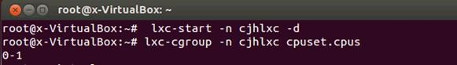
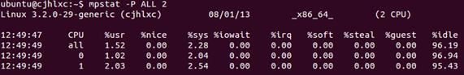

在 IBM Bluemix 云平台上开发并部署您的下一个应用。
什么是虚拟机的重要资源
资源管理是将资源从资源提供方分配到资源用户的一个过程。对于资源管理的需求来自于资源过载（即，需求大于容量）以及需求与容量随着时间的推移而有所差异的事实。通过资源管理，可以动态重新分配资源，以便更高效地使用可用容量。资源包括 CPU（中央处理器）、内存、存储器和网络资源。本文主要介绍内存、CPU（中央处理器）和存储器。
LXC 虚拟机资源调配的两种方法
直接修改配置文件
LXC 虚拟机的配置文件是 lxc.conf，LXC 配置项都是以 key=value 的形式，LXC 采用 cgroup 系统来对容器进行资源管理，因此 cgroup 的各个子系统均可以使用。一个完成的配置文件包括 cgroup 部分、network 部分、rootfs 部分。
通过修改配置文件用户可以直接 LXC 虚拟机资源调配。本文主要介绍第二种方法。
使用相关命令行工具
LXC 采用 cgroup 来对容器进行资源管理，并且所有 cgroup 子系统的配置参数均可以通过 lxc-cgroup 命令进行动态获得或者调整。首先看看 lxc-cgroup 命令的使用方法。
lxc-cgroup 命令格式：
lxc-cgroup --name=NAME subsystem [value]
-n, --name=NAME 容器名称
Subsystem 指定子系统对照组名
[value] 指定子系统对照组要设置值
配置 LXC 虚拟计算机的 CPU（中央处理器）资源
说明下面笔者使用的 LXC 虚拟计算机名称是 cjhlxc（下同）：
1 首先查看虚拟机目前使用的资源列表
#lxc-cgroup -n cjhlxc devices.list
2 查看 LXC 虚拟计算机 cjhlxc 目前 CPU（中央处理器）资源使用情况
说明首先用户必须启动这个 cjhlxc，然后查看
$ lxc-start -n cjhlxc -d
$ lxc-cgroup -n cjhlxc cpuset.cpus
操作过程见图 1
图 1
说明：0-1 表示确实情况下 LXC 虚拟计算机使用是全部 CPU（中央处理器） 。
3 指定 LXC 虚拟计算机 cjhlxc 只能使用 CPU 1
#lxc-cgroup -n cjhlxc cpuset.cpus "1"
除了使用 lxc-cgroup 命令，也可以直接修改 LXC 虚拟计算机的配置文件：
# sudo vim /var/lib/lxc/cjhlxc /config
在文件结尾处添加一行：
〝lxc.cgroup.cpuset.cpus = 1〞
然后存盘退出。
然后用户可以重新查看一下
#lxc-cgroup -n cjhlxc cpuset.cpus 1
注意此时输出直接从“0-1”变成“1”
说明：cpuset.cpus 是cpuset 子系统中的参数，指定允许这个 cgroup 中任务访问的 CPU（中央处理器）。这是一个用逗号分开的列表，格式为 ASCII，使用小横
线（"-"）代表范围，例如：cpuset.cpus=1,2-4
安装 mpstat 工具进行验证
首先登录 LXC 虚拟计算机安装 sysstat 工具包
#lxc-console –n cjhlxc
下面这个命令是在 LXC 虚拟计算机 cjhlxc 上执行的
$ sudo apt-get install sysstat $ mpstat -P ALL 2
输出见图 2
图 2
图 2 显示 CPU（中央处理器） 0 使用率低于 CPU（中央处理器） 1, 不过 CPU（中央处理器） 0 使用率也会变高, 因 mpstat 命令是显示物理 CPU（中央处理器） 信息, 主机计算机还是会使用 CPU（中央处理器） 0 。
更加细化分配 CPU（中央处理器）资源
lxc 通过 cgroup 实现资源隔离功能。从 CPU 资源来说，主要有两个变量 cpu.shares 和 cpuset.cpus。cpu.shares 是一个 lxc 使用 cpu 的份额，按照百分比来计算。另外 cgroup 的目录下还有一个 cpu.shares 的文件，对其写入整数值可以控制该 cgroup 获得的时间片。如果我们希望 cjhlxc1 使用更多的 CPU（中央处理器）资源，cjhlxc2 使用较少的 CPU（中央处理器）资源，那么可以使用如下命令设置：
# lxc-cgroup -n cjhlxc2 cpu.shares 512 # lxc-cgroup -n cjhlxc1 cpu.shares 1024
通过以上设置后 cjhlxc1 资源占用比例是 66%，cjhlxc2 资源占用比例是 33% 。
说明：LXC 支持动态分配调整，以上操作均在不停止应用程序前提下完成。LXC 支持“资源抢占”，在共享 cpu 的前提下，忙碌的 lxc 会抢占闲置 lxc 的资源。
配置 LXC 虚拟计算机的内存资源
内存子系统自动生成 cgroup 中任务使用的内存资源报告，并设定由那些任务使用的内存限制，内存子系统有两个参数：
memory.limit_in_bytes：设定用户内存的最大量（包括文件缓存）。
memory.memsw.limit_in_bytes：设定最大内存与 swap 用量之和。
应用实例
1 设置 LXC 虚拟计算机 cjhlxc 使用的内存容量是 320 兆
使用 lxc-cgroup 命令
如果用户希望 LXC 虚拟计算机 cjhlxc 使用的内存容量是 320 兆，可以使用如下命令设置：
下面使用 lxc-cgroup 命令修改
# lxc-cgroup -n cjhlxc memroy.limit_in_bytes 320000000
除了使用 lxc-cgroup 命令，也可以直接修改 LXC 虚拟计算机的配置文件：
# sudo vim /var/lib/lxc/cjhlxc /config
把配置文件添加一行：
lxc.cgroup.memory.limit_in_bytes = 320000000
2 设置 LXC 虚拟计算机 cjhlxc 取消 swap 功能
直接修改 LXC 虚拟计算机的配置文件
vim /var/lib/lxc/myUS1204_bak/config
# 加入以下二行
lxc.cgroup.memory.limit_in_bytes = 300000000 lxc.cgroup.memory.memsw.limit_in_bytes = 300000000 # 此项目的设定值与 memory.limit_in_bytes 一样, 代表取消 swap 功能
为 LXC 虚拟计算机添加硬盘存储器
首先用户要在主机上添加一块新硬盘并且格式化，限于篇幅这里笔者不进行详细介绍。下面看看如何添加到 LXC 虚拟计算机 cjhlxc ：
在 LXC 虚拟计算机建立挂载目录
$ sudo mkdir /var/lib/lxc/cjhlxc/rootfs/mnt/mydisk
挂载新增硬盘至 LXC 虚拟计算机的挂载目录
$sudo mount /dev/sdb1 /var/lib/lxc/cjhlxc/rootfs/mnt/disk1
在挂载目录新增 abc 的 目录
$ sudo touch /var/lib/lxc/cjhlxc/rootfs/mnt/disk1/abc
说明以上三个步骤在主机上操作，rootfs 用于指定容器的虚拟根目录，设定此项以后，容器内所有进程将会把此目录根目录，不能访问此目录之外的路径，相当于 chroot 的效果 。下面启动 LXC 虚拟计算机完成添加。
$ sudo lxc-start -n cjhlxc -d $ sudo lxc-console -n cjhlxc
2. 查看使用挂载目录内容 (在 LXC 虚拟计算机中操作)
$ ll /mnt/mydisk/ total 24 drwxr-xr-x 3 root root 4096 Jan 18 14:40 ./ drwxr-xr-x 4 root root 4096 Jan 18 14:39 ../ -rw-r--r-- 1 root root 0 Jan 18 14:40 abc drwx------ 2 root root 16384 Jan 18 14:36 lost+found/
LXC 虚拟计算机的监控
查看所有使用中的容器，使用命令：
# lxc-ls --active cjhlxc
查看一个容器的使用情况，使用命令：
# lxc-info -n cjhlxc state: RUNNING pid: 10171
查看容器中进程，使用命令：
# lxc-ps -n cjhlxc CONTAINER PID TTY TIME CMD cjhlxc 7624 ? 00:00:00 init cjhlxc 7838 ? 00:00:00 dhclient cjhlxc 7898 ? 00:00:00 login cjhlxc 7910 pts/3 00:00:00 bash
监控容器的状态
$ lxc-monitor -n cjhlxc 'cjhlxc' changed state to [STARTING] 'cjhlxc' changed state to [RUNNING] 'cjhlxc' changed state to [STOPPING] 'cjhlxc' changed state to [STOPPED]
说明：lxc-monitor 命令用来监控一个容器状态的变换，当一个容器的状态变化时，lxc-monitor 命令会在屏幕上打印出容器的状态变化过程。
总结
使用 LXC 的优点就是不需要安装太多的软件包，使用过程也不会占用太多的资源，Linux conatiners (LXC) 是在 Linux 平台上基于容器的虚拟化技术的未来标准，最初的 LXC 技术是由 IBM 研发的，目前已经进入 Linux 内核，这意味着 LXC 技术将是目前最有竞争力的轻量级虚拟容器技术，到此为止本文将循序渐进地介绍在 Linux 容器的建立管理和如何管理几种主要资源设备：网络接口、内存、CPU（中央处理器） 、硬盘存储器。下面笔者把 LXC 和 Linux 下其它两种主要的虚拟技术做一些简单的对比见表 1
表 1
| 特点 | XEN(半虚拟化） | KVM(全虚拟化) | LXC |
|---|---|---|---|
| 动态迁移 | 支持 | 支持 | 不支持 |
| Reboot | 支持 | 支持 | 支持 |
| CPU（中央处理器）增减方法 |
通过 Guest CPU（中央处理器） 热插拔机制支持 | 通过 balloon driver 支持 |
通过 cpuset 和 CFS 组调度 扩展支持 |
| 内存增减方法 |
通过 Guest CPU（中央处理器） 热插拔机制支持 | 通过 balloon driver 支持 |
通过 cgroup 支持 |
| 异构模拟 | 支持 | 支持 | 不支持 |
| 可运行不同 OS | 支持 | 支持 | 不支持 |
| 速度 | 比本地环境慢 | 比本地环境慢 | 基本同本地环境 |
| 安全隔离性 | 强 | 强 | 差 |
| 快照功能 | 支持 | 支持 | 不支持 |
| iSCSI 存储 | 支持 | 支持 | 不支持 |
| 服务控制 | 支持 | 支持 | 不支持 |
| VLAN 网络 | 支持 | 支持 | 支持 |
| 附加卷管理 | 支持 | 支持 | 不支持 |
LXC 的优缺点
优点
- 虚拟化开销小，一台物理机可以运行很多“小”虚拟机。
- 通过 cgroup 的方法增减 CPU（中央处理器）/内存非常方便，调整速度很快。
- 虚拟机运行速度和本地环境相同的速度基本相同。
缺点
- 不能热迁移 。
- 不能模拟不同体系结构、装不同操作系统。
- 安全隔离差 。
参考资料
学习
- Linux 容器的建立和简单管理/：Linux 容器可以提供轻量级的虚拟化实现，用于隔离进程和资源。本文循序渐进地介绍 Linux 容器的建立和管理方法以及虚拟网络接口的设置过程。
- 访问 LXC 官方网站 ，可以查看更多关于 LXC 操作的信息。
- 在 developerWorks Linux 专区寻找为 Linux 开发人员（包括 Linux 新手入门）准备的更多参考资料。
讨论
- 加入 developerWorks 中文社区。查看开发人员推动的博客、论坛、组和维基，并与其他 developerWorks 用户交流。
条评论


IBM Bluemix 资源中心
文章、教程、演示，帮助您构建、部署和管理云应用。

developerWorks 中文社区
立即加入来自 IBM 的专业 IT 社交网络。
-
Bluemixathon 挑战赛
为灾难恢复构建应用，赢取现金大奖。
请 登录 或 注册 后发表评论。
注意：评论中不支持 HTML 语法